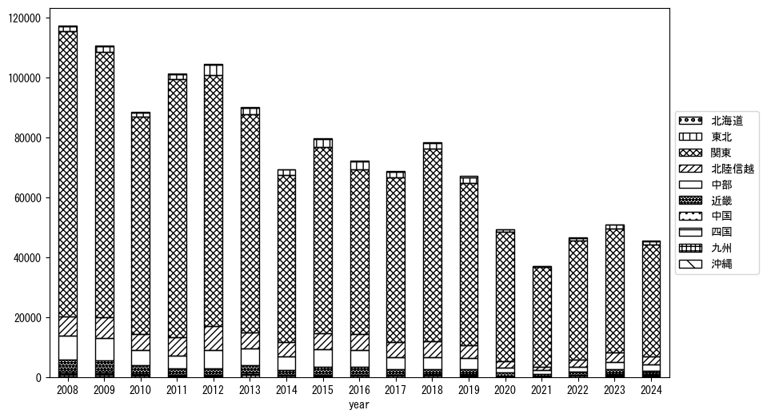
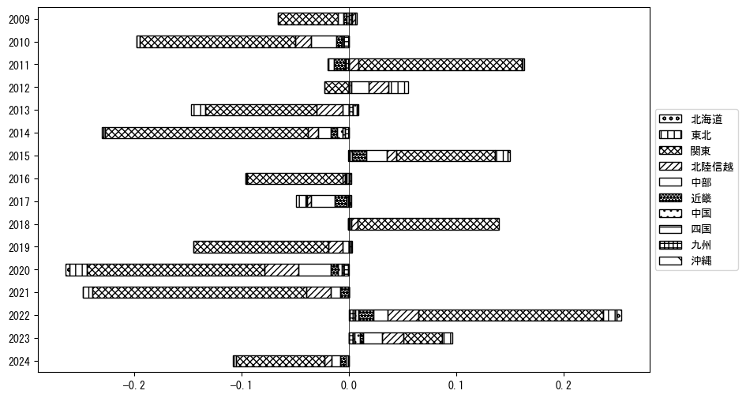

-
トップ
-
群馬県
群馬県
１．延べ宿泊者（総数）の推移
時系列グラフ
 図１：群馬県内の従業員数100人以上の宿泊施設での延べ宿泊者数（国外、居住地不詳を含む総数）。
図１：群馬県内の従業員数100人以上の宿泊施設での延べ宿泊者数（国外、居住地不詳を含む総数）。
基本統計量
表１：従業員数100人以上の宿泊施設での延べ宿泊者の総数（国外、および居住地不詳を含む）に関する基本統計量。単位は人泊。平均は１か月あたりの平均値を表す。図１に対応。
| 2008年 |
121,020 |
20,345 |
97,312 (9月) |
153,530 (11月) |
| 2009年 |
116,558 |
23,222 |
87,829 (2月) |
177,170 (8月) |
| 2010年 |
111,067 |
15,982 |
94,501 (1月) |
150,190 (8月) |
| 2011年 |
103,509 |
33,357 |
47,192 (4月) |
175,991 (8月) |
| 2012年 |
112,083 |
30,454 |
83,370 (2月) |
194,393 (8月) |
| 2013年 |
97,765 |
14,291 |
81,797 (12月) |
134,988 (8月) |
| 2014年 |
77,387 |
12,073 |
58,269 (7月) |
94,251 (3月) |
| 2015年 |
86,820 |
12,490 |
67,579 (7月) |
114,812 (8月) |
| 2016年 |
77,615 |
8,665 |
63,786 (6月) |
94,024 (8月) |
| 2017年 |
76,089 |
11,328 |
55,836 (2月) |
93,090 (8月) |
| 2018年 |
84,518 |
22,756 |
52,365 (2月) |
115,143 (10月) |
| 2019年 |
72,307 |
12,206 |
51,889 (7月) |
94,796 (8月) |
| 2020年 |
50,347 |
26,793 |
1,476 (5月) |
84,946 (10月) |
| 2021年 |
37,151 |
19,788 |
11,288 (2月) |
67,054 (11月) |
| 2022年 |
53,437 |
14,341 |
29,748 (2月) |
80,410 (8月) |
| 2023年 |
62,174 |
9,611 |
50,227 (2月) |
74,772 (11月) |
２．宿泊者数の重心（年平均の推移）
図２：群馬県内の従業員数100人以上の宿泊施設での宿泊者数（国外、居住地不詳を除く）の重心（年平均の推移）。
全画面表示
重心の前年平均からの移動距離と方位、および緯度・経度
表２：重心の前年平均からの移動距離と方位、および緯度・経度。図２に対応。
| 2008年 |
— |
— |
35.8865 |
139.1396 |
| 2009年 |
北西 |
3.2km |
35.9099 |
139.1182 |
| 2010年 |
東北東 |
7.4km |
35.9272 |
139.1975 |
| 2011年 |
東北東 |
14.0km |
35.9828 |
139.3363 |
| 2012年 |
北西 |
7.7km |
36.0279 |
139.2720 |
| 2013年 |
南西 |
12.0km |
35.9477 |
139.1836 |
| 2014年 |
北東 |
3.0km |
35.9672 |
139.2073 |
| 2015年 |
西北西 |
3.1km |
35.9742 |
139.1741 |
| 2016年 |
西 |
2.9km |
35.9725 |
139.1416 |
| 2017年 |
東南東 |
7.5km |
35.9585 |
139.2229 |
| 2018年 |
東 |
3.9km |
35.9638 |
139.2660 |
| 2019年 |
西 |
3.6km |
35.9655 |
139.2266 |
| 2020年 |
東 |
10.2km |
35.9559 |
139.3393 |
| 2021年 |
南 |
5.7km |
35.9044 |
139.3431 |
| 2022年 |
北西 |
6.4km |
35.9373 |
139.2844 |
| 2023年 |
西 |
9.2km |
35.9231 |
139.1839 |
運輸局別延べ宿泊者数
時系列（年平均）

図３：群馬県内の従業員数100人以上の宿泊施設での１か月あたり平均宿泊者数（国外、居住地不詳を除く）の運輸局別内訳。
寄与度（前年からの変化率に対する）

図４：群馬県内の従業員数100人以上の宿泊施設での運輸局別宿泊者数（国外、居住地不詳を除く）から求めた寄与度。
３．宿泊者数の重心（月別）
図５：群馬県内の従業員数100人以上の宿泊施設での宿泊者数（国外、居住地不詳を除く）の重心（月別）。観測期間は2008年1月から2023年12月まで。
全画面表示
全期間（2008年1月～2023年12月）の平均と月別平均の比較
表３：全期間の平均から月別平均までの移動距離と方位、および緯度・経度。図５に対応。
| 全期間 |
— |
— |
35.9503 |
139.2273 |
| 1月 |
東南東 |
8.1km |
35.9242 |
139.3110 |
| 2月 |
南東 |
9.6km |
35.8998 |
139.3138 |
| 3月 |
東北東 |
1.9km |
35.9576 |
139.2461 |
| 4月 |
北 |
2.3km |
35.9709 |
139.2239 |
| 5月 |
西北西 |
7.3km |
35.9675 |
139.1492 |
| 6月 |
北西 |
9.3km |
36.0074 |
139.1520 |
| 7月 |
南南西 |
0.6km |
35.9455 |
139.2252 |
| 8月 |
南東 |
14.7km |
35.8716 |
139.3578 |
| 9月 |
西南西 |
4.5km |
35.9299 |
139.1842 |
| 10月 |
西 |
8.9km |
35.9619 |
139.1297 |
| 11月 |
北西 |
5.5km |
35.9875 |
139.1869 |
| 12月 |
北北東 |
3.7km |
35.9793 |
139.2474 |
運輸局別延べ宿泊者数
月別平均（2008年1月～2023年12月）
 図６：群馬県内の従業員数100人以上の宿泊施設での宿泊者数（国外、居住地不詳を除く）の運輸局別内訳（月別）。
図６：群馬県内の従業員数100人以上の宿泊施設での宿泊者数（国外、居住地不詳を除く）の運輸局別内訳（月別）。
寄与度（全期間の平均から月別平均への変化率に対する）
 図７：群馬県内の従業員数100人以上の宿泊施設での運輸局別宿泊者数（国外、居住地不詳を除く）から求めた寄与度（月別）。
図７：群馬県内の従業員数100人以上の宿泊施設での運輸局別宿泊者数（国外、居住地不詳を除く）から求めた寄与度（月別）。
４．データのダウンロード
出典：観光庁「宿泊旅行統計調査」に収録された「施設所在地、居住地別延べ宿泊者数（従業員数100人以上の施設）」
国土地理院「白地図（地理院タイル）」（図２と図５）